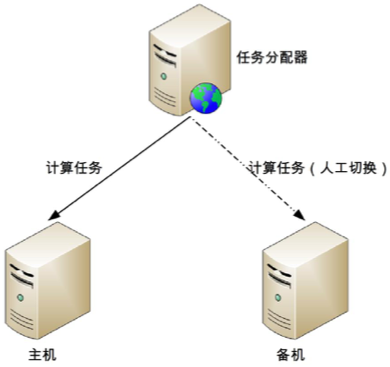
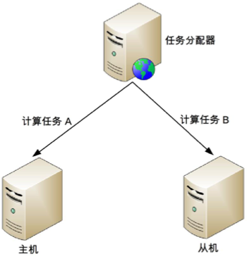
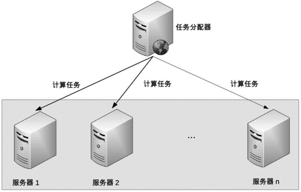
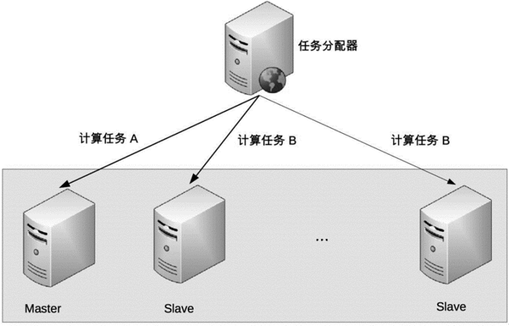

26-如何设计计算高可用架构？
前言
计算高可用的主要目标是当部分硬件出现故障时，计算任务能够继续执行。其本质是通过冗余的方式来规避部分故障的风险，因此单台服务器是做不到这一点的，所以计算高可用的设计思想很简单：通过增加更多的服务器来达到计算高可用。
计算高可用的复杂度来源于任务管理，即当任务在某台服务器上失败后，如何将任务重新分配到另一台服务器上重新执行。因此设计计算高可用架构关键在于以下二点：
哪些服务器可以执行任务
第一种方式和计算高性能中的集群类似，每个服务器都可以执行任务。 另外一种方式和存储高可用中的集群类似，只有特定主机可以执行任务。当执行服务器出现故障后，系统需要挑选新的服务器来执行任务。
任务如何重新执行
第一种策略是对于已经分配的任务即便执行失败也不重新执行，系统只保证新的任务分配到非故障的服务器上进行执行。 第二种策略是设计一个任务管理器来管理需要执行的计算任务，服务器执行完毕后，需要向任务管理器反馈执行结果，任务管理器根据任务执行结果来决定是否需要将任务重新分配到新的服务器上执行。
需要注意的是：任务分配是一个逻辑概念，不一定要求系统有一个独立的任务管理器模块。例如Nginx即是反向代理工具，同时也承担了任务分配的角色。
常用的计算高可用架构有三种：主备、主从和集群。
主备
主备架构是最简单的计算高可用架构，与存储高可用架构类似，但是没有数据复制通道。

详细设计：
- 主机执行所有计算任务，例如：读写操作、执行计算等。
- 当主机故障时，任务分配器不会自动将任务分配给备机,此时系统处于不可用状态。
- 如果主机可以恢复，任务分配器继续将任务分配给主机。
- 如果主机不可以恢复，则需要人工操作，将备机升级为主机,然后任务分配器将任务分配给新的主机。同时，为了继续保持计算高可用，需要补充新的机器作为备机。
根据备机的状态不同，可以分为冷备和温备。 冷备：备机上的程序和配置已经准备好，但备机上的业务系统没有启动(注意：备机上的服务器是启动的),主机故障后，需要人工的方式启动备机业务系统,并让任务分配器将任务分配给备机。 温备：备机上的业务系统已经启动，但是不对外提供服务，主机故障后,人工只需要任务分配器上的任务请求切换到备机即可。冷备可以节省一部分能源，但温备能够大大减少手工操作的时间。
主备架构的优点的简单，但缺点就是需要人工操作。人工操作的时间不可控,而且人工操作非常容易出错。比较适合内部管理系统、后台管理系统这类使用人数不多、使用频率不高的业务,不太适合在线的业务。
主从
计算高用的主从架构类似于存储高可用中的主从架构。计算高可用架构中从机也是要执行任务的。任务分配器需要对任务进行分类，确认哪些任务分配给主机，那些任务分配给从机。其架构如下图：

主从架构的设计思路：
- 正常情况下，主机执行部分任务，从机执行部分任务。
- 当主机故障时，任务分配器不会自动将原来发送给主机的任务分配给从机,而是继续发送给主机,不管这些任务执行是否成功。
- 如果主机能够恢复,任务分配器将继续按照原先的策略分配计算任务。
- 如果主机不能够恢复,则需要人工操作，将原来的从机升级为主机(一般只要改配置即可),增加新的机器作为从机,新的从机准备就绪后，任务分配器将继续按照原来的策略分配任务。
主从架构的优缺点：
- 从机也执行任务，发辉硬件的性能。
- 主从架构需要将任务分类，任务分配器会复杂一点。
集群
主备和主从架构都是通过增加一台机器来提升可用性，且需要人工来切换主备和主从。虽然设计简单，但是存在一个问题：人工操作效率低、容易出错、不能及时处理故障。因此在对可用性要求更加严格的场景下，需要系统可以自动切换。
高可用计算的集群方案根据集群中服务器中节点角色不同分为二类：一类是对称集群，即集群中每个服务器的角色都是一样的,都可以执行所有任务。另一类是非对称集群,集群中的服务器分为多个不同的角色,不同的角色执行不同的任务，例如常见的Master-slave角色。
计算高可用集群包括二台服务器的集群，与存储高可用的集群不太一样。存储高可用集群把双机架构和集群进行了区分。而在计算高可用集群中，2台服务器和多台服务器在设计上没有本质区别。
对称集群
对称集群更通俗的叫法是负载均衡集群，其架构如下图：

其设计过程如下：
- 正常情况下，任务分配器采用某种策略(如轮询、随机等)将计算任务分配给集群中不同的服务器。
- 当集群中某台服务器出现故障后，任务分配器不再将任务分配给它，而是将任务分配给其它的服务器。
- 当故障服务器恢复后，任务分配器重新将任务分配给它执行。
关键点在于：
- 任务分配器需要选取分配策略。
- 任务分配器需要检测服务器状态。
任务分配策略一般使用轮询和随机就可以了。状态检测稍微复杂一点，需要检测服务器的状态，例如是否宕机、网络是否正常等。还要检测任务的执行状态，例如任务是否卡死、是否执行时间过长等。通常做法是任务服务器和服务器之间通过心跳来传递消息，包括服务器信息和任务信息，然后根据时间情况来确定状态判断条件。
非对称集群
非对称集群中不同服务器的角色是不同的，不同角色的服务器承担不同的职责。以Master-Slave为例，部分任务是Master服务器上执行，部分任务是Slave服务器才能执行。其架构如下：

非对称集群架构设计：
- 集群会通过某种方式来区分不同服务器的角色。例如：通过ZAB算法选举，或者简单的取最小ID的服务器作为Master服务器。
- 任务分配器将不同的任务发送给不同的服务器。
- 当指定类型的服务器出现故障时，需要重新分配角色。例如：如果Master故障了，需要将剩余的Slave服务器中的一台重新指定为Master服务器。如果是Slave服务故障了，则不需要重新分配角色，只需要将故障机器踢除即可。
非对称集群相比负载均衡集群，其复杂度主要来源于以下方面：
- 任务分配策略更加复杂：需要将任务划分不同类型并分配给不同角色的集群节点。
- 角色分配策略实现比较复杂：可以需要使用ZAB、RAFT这类复杂的算法实现Leader的选举。
以Zookeeper为例：
- 任务分配器：Zookeeper中不存在独立的任务分配器节点，每个Server都是任务分配器，Follower收到请求后会进行判断，如果是写请求则转发给Leader，如果是读请求，则自己处理。
- 角色指定：Zookeeper通过ZAB算法选举出Leader，当Leader出现故障后，所有的Follower节点会暂停读写操作，开始选举，直到新的leader被选举出后才继续对Client提供服务。